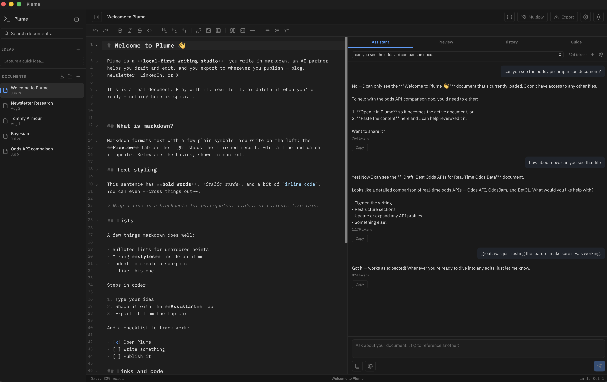

Plume is a desktop markdown notebook with an AI partner built in. Capture an idea, shape it into a draft in your voice, and export it anywhere — all in one fast, private app.

Use it as a plain, fast markdown editor. Or let the AI partner carry a piece all the way from rough draft to content for every platform. Same app — your call, every time.
CodeMirror 6 with a formatting toolbar, syntax highlighting, and a live GitHub-flavored preview rendered by the same engine that drives every export.
Streaming chat with your document as context. Multiple threads per doc, token usage shown, and a Voice & tone you set once so everything sounds like you.
Select a sentence, get a streamed rewrite previewed right in place, then accept or reject — no round trip through a chat box.
Write the piece once, then turn it into platform-native variants — blog, newsletter, LinkedIn, X thread — each a linked, editable document. No rewriting it five times.
Real Word .docx with heading styles, numbering, checkboxes, hyperlinks and tables. Plus X threads, LinkedIn-ready text, and clean self-contained HTML.
Everything lives in a SQLite database on your machine. Bring your own API key — the only thing that leaves is what you send your AI provider.
Whatever you're writing — a journal entry, a blog post, a paper, a skill doc — start it once and take it all the way to wherever it needs to go.
Drop a half-formed thought into Ideas without losing your place, or just start writing in a fresh markdown doc.
Lean on the writing partner to shape rough notes into a real piece, in the voice you defined once.
Multiply one piece into a blog post, a thread, or a doc — then export clean to Word, HTML, or wherever you publish.
Plume is local-first and bring-your-own-key. No subscription, no lock-in — just a tool that gets out of your way.